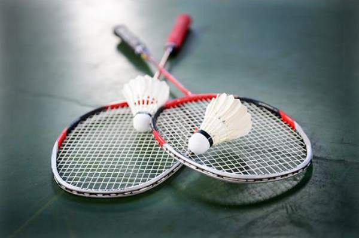

BADMINTON AT OLYMPICS
|  |
BADMINTON IS A SPORT CONTESTED AT THE SUMMER OLYMPIC GAMES. BADMINTON WAS FIRST HELD AS A DEMONSTRATION SPORT AT THE 1972 SUMMER OLYMPICS, AND WAS AN EXHIBITION SPORT AT THE 1988 SUMMER OLYMPICS. THE MEN'S AND WOMEN'S SINGLES AND DOUBLES HAVE BEEN HELD AT EVERY SUMMER OLYMPICS SINCE THE 1992 SUMMER OLYMPICS. THE MIXED DOUBLES BADMINTON TOURNAMENT STARTED IN THE 1996 SUMMER OLYMPICS. THE BADMINTON WORLD FEDERATION (BWF) RANKINGS ARE USED TO DETERMINE THE QUALIFICATION OF THE PLAYERS FOR THE TOURNAMENT. IN THE 2008 SUMMER OLYMPICS, EACH SINGLES TOURNAMENT HAD 38 COMPETITORS, WHILE EACH DOUBLES TOURNAMENT HAD 16 PAIRS.ALL PLAYERS OR PAIRS FROM THE TOP 16 PLACES ON THE BWF RANKINGS AUTOMATICALLY QUALIFY, ALTHOUGH EACH NATIONAL OLYMPIC COMMITTEE (NOC) CAN SEND LESS THAN THREE PLAYERS OR PAIRS IN EACH TOURNAMENT. THE TOP 64 THEN QUALIFY WITH THE CAVEAT THAT EACH NOC CAN SEND ONLY TWO PLAYERS/PAIRS FROM THAT PORTION OF THE LIST. PLAYERS AND PAIRS RANKED BELOW THE 64TH PLACE ONLY QUALIFY IF THEY ARE THE HIGHEST-RANKED COMPETITOR FROM THEIR NATION. TWO PLACES EACH IN THE MEN'S AND WOMEN'S SINGLES WILL BE DETERMINED BY THE INTERNATIONAL OLYMPIC COMMITTEE (IOC) TRIPARTITE COMMISSION. THE HOST NATION, IF IT HAS NOT ALREADY QUALIFIED TWO COMPETITORS, RECEIVES AT LEAST EITHER TWO SINGLES PLAYERS OR ONE PAIR.THE RULES USED IN THE TOURNAMENT ARE THE SAME AS THE BWF RULES.GAO LING IS THE ALL-TIME LEADER FOR THE MOST OLYMPIC MEDALS IN BADMINTON, WITH TWO GOLD, ONE SILVER, AND ONE BRONZE; KIM DONG-MOON (TWO GOLD, ONE BRONZE) AND GIL YOUNG-AH (ONE OF EACH) ARE SECOND FOR THE MOST MEDALS IN BADMINTON, EACH WITH THREE. GAO, KIM, AND ZHANG JUN ARE THE ALL-TIME LEADERS FOR THE MOST GOLD MEDAL WINS, WITH TWO. IN THE 1992 SUMMER OLYMPICS, JALANI AND RAZIF SIDEK WERE THE FIRST MALAYSIAN OLYMPIC MEDALISTS SINCE MALAYSIA FIRST PARTICIPATED THE 1964 SUMMER OLYMPICS. MIA AUDINA WON HER FIRST SILVER IN THE 1996 OLYMPICS REPRESENTING INDONESIA, BUT WON HER SECOND SILVER IN THE 2004 SUMMER OLYMPICS WITH THE NETHERLANDS.IN THE 2000 SUMMER OLYMPICS, CHINA SWEPT THE WOMEN'S DOUBLES TOURNAMENT, WINNING ALL THREE MEDALS, MAKING IT THE ONLY SWEEP IN OLYMPIC BADMINTON HISTORY.CHINA HAS BEEN THE MOST SUCCESSFUL NATION IN BADMINTON, WINNING 38 MEDALS; 28 OF THEM WERE FROM THE WOMEN'S SINGLES AND DOUBLES AND MIXED DOUBLES TOURNAMENTS. INDONESIA (18 MEDALS) AND SOUTH KOREA (18 MEDALS) ARE THE ONLY OTHER NATIONS TO HAVE MORE THAN SEVEN MEDALS. AS OF THE 2008 SUMMER OLYMPICS, 76 MEDALS (24 GOLD, 24 SILVER, AND 28 BRONZE) HAVE BEEN AWARDED TO 96 ATHLETES FROM 7 NOCS.THERE WERE FOUR ADDITIONAL BRONZE MEDAL WINNERS IN THE 1992 SUMMER OLYMPICS BECAUSE NO BRONZE MEDAL MATCHES WERE PLAYED IN ANY OF THE FOUR TOURNAMENTS.